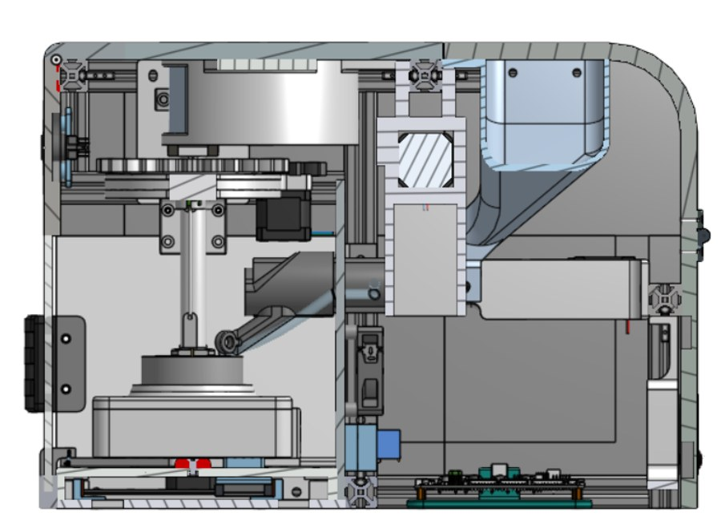

Project
Candl
A countertop candle-making device that lets users create custom-scented, homemade candles at the press of a button.
Press-Button Op
Custom Scent Mix
Countertop Form Factor

A countertop candle-making device that lets users create custom-scented, homemade candles at the press of a button.
Traditional candle-making is messy, time-consuming, and hard to customize, so the goal was to package several electromechanical subsystems into one cohesive, user-ready countertop appliance.
